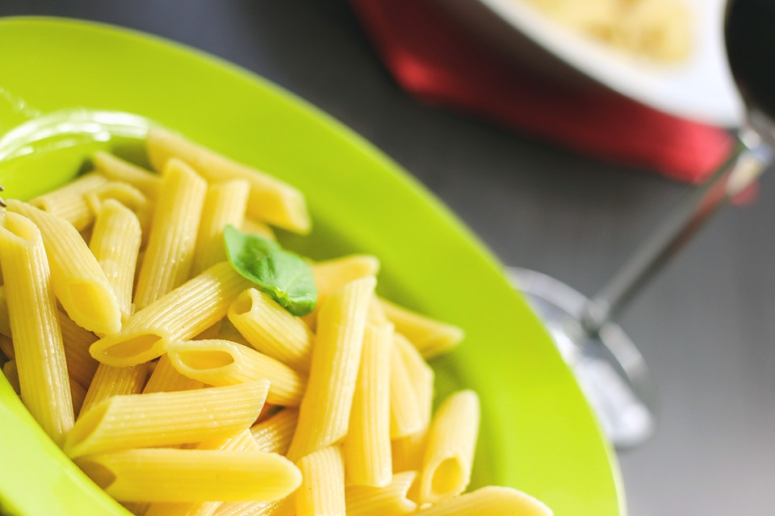

Nudeln Rezept

Beschreibung
Nudeln sind das grundlegende Gericht. Deswegen sollte jeder wissen
wie genau man Nudeln eigentlich am besten aufbereitet. Denn das Salzen vom Wasser, die
richtige Menge an Nudeln und das Richtige Abschrecken mit Wasser muss gekonnt sein!
Zutaten für Nudeln (1 Person)
- Nudeln: 200g
- Kochsalz: 20g
- kaltes Wasser
Schritte:
- Schritt:
Koche gesalzenes Wasser auf!
- Schritt:
Gebe die gewünschte Menge Nudeln in das kochende Wassser!
- Schritt:
Lasse die Nudeln je nach Verpackungsangabe und eigenem Geschmack in dem Wasser kochen.
- Schritt:
Schrecke ddie Nudeln ab und serviere die Nudeln mit ggbf. einer Soße